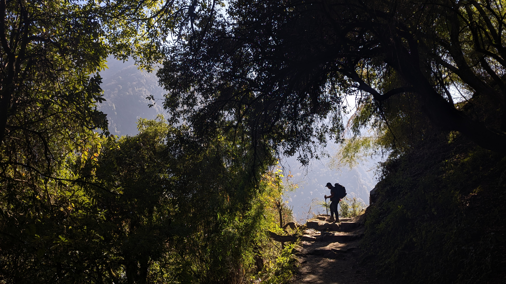
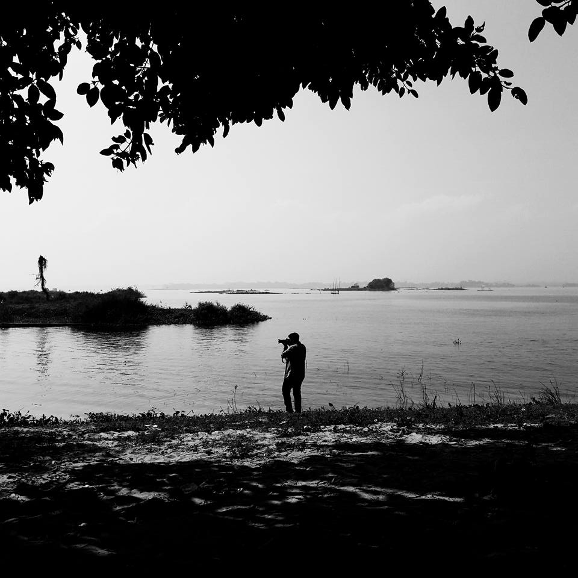

Intro

Photography, to me, is more than just capturing moments—it’s about telling stories, exploring cultures, and revealing the beauty in the unseen. Through my lens, I document the transitions of society, the raw emotions of human connection, and the landscapes that shape our world. Check out my work.
From the bustling streets to the serene landscapes, from intimate portraits to grand architectural marvels, my work spans diverse genres, each frame carrying a story of its own. Whether it's documentary, lifestyle, travel, or commercial photography, my aim is to create visuals that resonate, inspire, and provoke thought.
This space is where I share my work, my experiences, and my perspective on the world. Feel free to explore, connect, and immerse yourself in the stories I capture. Welcome to my world of photography.
Gallery
 Visit Full Gallery
Visit Full Gallery
About

I’m Montashir Billah, a documentary and lifestyle photographer passionate about capturing decisive moments and the stories that unfold within them. My work explores the ever-changing landscapes of human connection, culture, and social transitions. Through my lens, I aim to document the essence of people and places, preserving the raw emotions and untold narratives that define them.
Over the years, I’ve worked in various photography genres, including landscape, travelogue, wedding, product, and architectural photography. I also have experience in video production and editing, which allows me to craft immersive visual stories beyond still images.
Currently, I’m working on a major documentary project, "Majar as a Shelter for the Social Outcast or The Other Islam," where I explore how majars provide refuge for those marginalized by society. This project is a deep dive into the intersection of faith, culture, and human survival.
For me, photography is more than just an art form—it’s a way of understanding and engaging with the world. Through my work, I hope to shed light on the unseen, the overlooked, and the stories that truly matter.
Contact
If you would like to get in touch, feel free to reach out to me through the following methods: